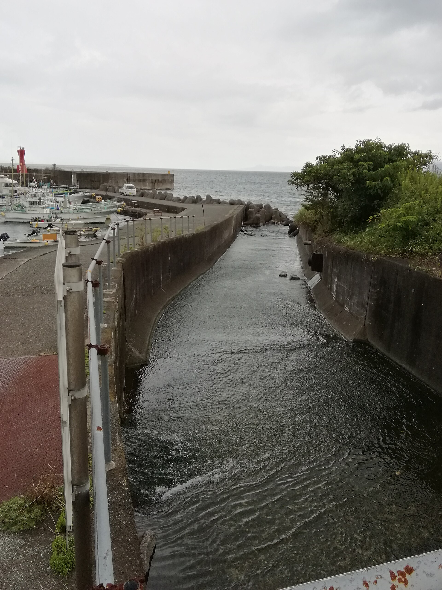

屋上にあるもの
ドライサウナあり
水風呂あり
外気浴あり
露天風呂あり
ご利用深夜 3:00 まで
貸し出し
サウナハット無料
サウナポンチョ無料
タオルセット¥220
泊まるコースと夜間入浴コースには付いています。
入るときのこと
体を洗ってからお願いします
タオルを水風呂に入れないでください
水分こまめに


ととのえ方
決まりではありません。はじめての方のための、だいたいの目安です。
- 1サウナ室8〜12分
背中が汗で濡れるまで。息が苦しくなる前に出ます。下の段のほうがぬるめです。
- 2水風呂1〜2分
かけ湯で汗を流してから入ります。冷たさに慣れたら、動かずにじっとしているほうが楽です。
- 3外気浴5〜10分
屋上の椅子で、体を拭いて座ります。ここがいちばん長くてかまいません。
この3つで1セット。2〜3セットが目安です。
体の中で起きていること
サウナ室の熱で皮膚の血管がひらき、血のめぐりが速くなります。水風呂に入ると血管が締まり、外気浴でまたゆっくりひらきます。
このひらく・締まる・ひらくの切り替わりのあとに来る、ぼんやりとした感じを「ととのう」と呼ぶ人が多いようです。
熱いほうが良いわけではない
我慢の長さを競うものではありません。汗が出て、息が楽なうちに出るのがちょうどよいとされています。
水風呂も同じで、冷たさに耐えるほど効くわけではありません。
気をつけること
サウナの前後と途中に、水分を取ってください。お酒を飲んだあとは入らないでください。
立ちくらみを感じたら、すぐに座ってください。心臓や血圧に不安のある方は、お医者さまにご相談のうえご利用ください。
体調の良くない日は、無理をなさらないでください。
ここに書いたのは、温度の変化で体に起きることの説明です。健康への効果をお約束するものではありません。
泊まれるサウナです。
夜に入って、そのまま泊まって、朝にもう一度。1人1台のカプセルベッドがあるので、整ったあとに帰らなくて済みます。
湯河原の湯は、古くから湯冷めしにくいと言われてきました。寝る前に入る日に向いています。
泊まるについて


開業のお知らせ
開業日と、ご予約の受付が始まる日を、先にお送りします。お送りするのは開業までのあいだだけです。